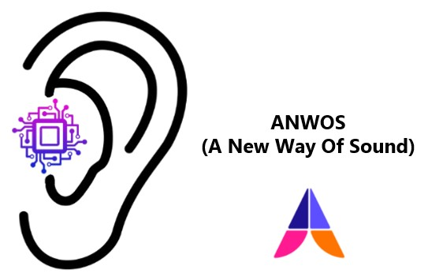
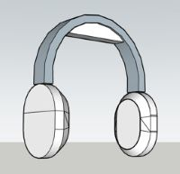
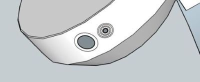
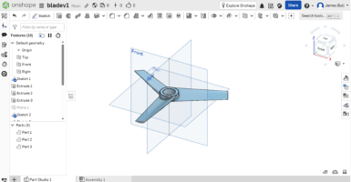
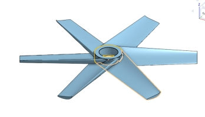
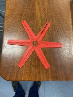

ANWOS was created as a part of my Arkwright Scholarship application. The premise is a pair of headphones with an AI-Powered 'selective noise cancellation' feature.


I began creating ANWOS by walking to the gym and having to use 1 ear-bud so that I could hear the oncoming traffic and to prevent the risk of injury. I realised that there wasn't a current practical solution to this and wondered if I would be able to create something to allow me to listen to what I wanted to hear.

The premise of ANWOS is allowing the audio you hear to be chosen by you.
I am currently working on designing a wind turbine and using custom-designed 3D printed turbine blades to determine how the aerodynamics of a blade affects the power output on a wind turbine with variables such as the number of blades, the shape, the size and the angle at which they are orientated.

/*add another image here ( height 200 px i think )*/
The project should take around 70 hours and will span these areas of engineering:
- 3D modelling on OnShape (CAD Software)
- Practicing my practical skills through building the turbine
- Designing a wiring diagram
- Developing my analysis skills and research
(photo here)

/*Put some context here*/